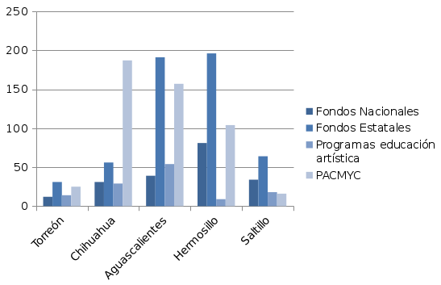

Las principales instituciones a nivel nacional e internacional que miden la calidad de vida o el grado en que las ciudades del mundo son más habitables, consideran a la cultura como parte fundamental de sus indicadores de bienestar. Estamos hablando de la cultura ligada al urbanismo: la cantidad de espacios culturales con los que se cuenta, edificios históricos, pero también festivales y todas las actividades que promueven las artes en las calles o espacios públicos de la ciudad.
Recientemente la empresa Gabinete de Comunicación Estratégica publicó la Encuesta sobre Ciudades Habitables que mide la percepción sobre la calidad de vida de los habitantes de 52 municipios de México. En la encuesta Torreón se ubicó en el lugar 19, subiendo 11 puntos respecto al año anterior. Sin embargo, Gómez Palacio se situó en el lugar 31. Uno de los aspectos considerados fueron los museos y espacios históricos donde nuestra ciudad fue calificada con 2.7 de cuatro puntos posibles según la percepción de los entrevistados.
La Zona Metropolitana de La Laguna, de acuerdo con el Sistema Metropolitano de Indicadores del IMPLAN, cuenta con 47 espacios culturales, (en los que se incluyen museos, teatros, galerías, auditorios, bibliotecas, librerías y casas de artesanías).
La Dirección de Centro Histórico que regula y resguarda el patrimonio arquitectónico del municipio, establece que 79 edificios se encuentran catalogados por el INBA y 81 por el INAH, de los cuales fueron demolidos 23, en las últimas 2 décadas.
La distribución de los espacios culturales en la ZML por cada mil habitantes, se encuentra establecida de la siguiente manera: Torreón cuenta con 0.36, Gómez Palacio con 0.15, Lerdo con 0.22 y Matamoros con 0.11. En promedio La Laguna tiene 0.26 lugares por cada mil habitantes. El indicador es aún muy bajo comparado con el de otras ciudades como Campeche, Guanajuato, Colima, Oaxaca o Querétaro.
De acuerdo al Índice de Competitividad Urbana 2014 del Instituto Mexicano para la Competitividad, Guanajuato cuenta con 4.24 espacios culturales por cada mil habitantes, siendo la ciudad mejor evaluada. Otras ciudades con buenos indicadores son en el tema son: Oaxaca con un índice de 1.85, Villa de Álvarez (Colima) con 1.75 y Querétaro con 2.25 espacios.
Otro indicador disponible es el acceso a fondos de apoyo para la cultura en el ámbito estatal y federal, en el cual según estadísticas del IMPLAN, obtenidas de la base de datos del Sistema de Información Cultural de Conaculta, en años recientes en fondos nacionales de apoyo a la cultura Torreón ha conseguido 12 apoyos, en fondos estatales 31 apoyos, en Programas de Educación Artística 14 apoyos y 25 por parte del Programa de Apoyo a las Culturas Municipales y Comunitarias (PACMYC).
Comparado con Chihuahua, Aguascalientes, Hermosillo y Saltillo, Torreón está en desventaja como la demuestra la siguiente gráfica. Uno de los municipios que más ha obtenido fondos nacionales y estatales de apoyo a la cultura es Hermosillo (con 81 y 196 respectivamente) y la capital Saltillo muestra 34 apoyos de fondos nacionales y 64 estatales.
 FUENTE: CONACULTUA
Aunque los indicadores tanto en infraestructura y apoyos estatales y federales a la cultura, aún son bajos en Torreón y la ZML comparado con municipios similares de México, también es cierto que la región se ha desarrollado en este rubro en los últimos años. Antes eran contadísimos los casos de instituciones o artistas que accedían a una beca nacional, y cada año se van sumando más a la estadística.
En la mayoría de los casos, quienes han obtenido apoyos nacionales como las becas del FONCA, el Sistema Nacional de Creadores o el programa “México en Escena”, han sido agrupaciones artísticas independientes o creadores que por méritos propios de crecimiento profesional, se están acercando a la calidad y talento de los mejores artistas del país.
Es de destacar que ninguno de los municipios que integran la Zona Metropolitana de La Laguna, se encuentra tan abajo en los indicadores de espacios culturales por cada mil habitantes, como es el caso de Reynosa – Río Bravo; que en el último estudio del IMCO se ubicó como la ciudad con menos oferta cultural en el país (con 0.08 espacios por cada mil habitantes). No obstante debe ser política a futuro en nuestros municipios crecer en el indicador.
En nuestra región, los municipios que más requieren aumentar su oferta y promover el crecimiento de sus artistas para que accedan a apoyos federales, son Gómez Palacio y Matamoros, para impactar de forma favorable en la competitividad y calidad de vida de la metrópoli. A su vez destaca el caso de Lerdo, que a pesar de tener una cuarta parte de la población de Torreón en infraestructura cultural y edificios históricos está muy cerca de Torreón en sus indicadores.
En general, en La Laguna se respira en los últimos años un impulso a la cultura, gracias sobre todo a iniciativas independientes y colectivos artísticos, sumado a los festivales organizados en plazas, teatros y demás espacios públicos por parte del gobierno que también han ido en aumento. Todo esto nos abonará en mejores indicadores de calidad de vida para nuestra región, algo en lo que todos salimos ganando.
Para conocer mejor cómo se encuentran distribuidos los espacios como museos, teatros y plazas públicas, se recomienda visitar el mapa Vida en la ciudad elaborado por el IMPLAN, y una muestra de dónde se ubican nuestros edificios históricos y artísticos, se puede apreciar en el mapa Patrimonio Histórico